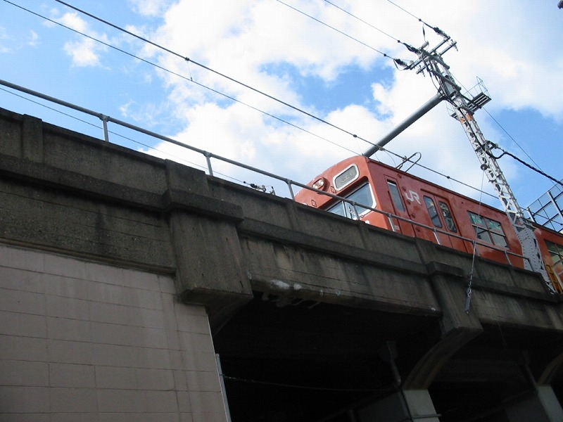
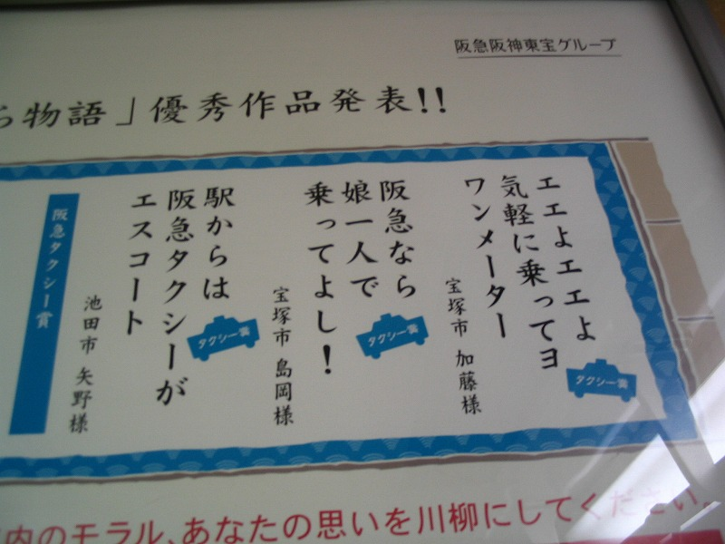

開放テコが何いわれましても。。ハア。
それよりズラ人形がナイス。最後の写真に涙して笑ろてもた。
ネタがないです。一年以上前に天満駅近くで撮った写真。

確かに最近は103おっても「高」ばっかしですな。低が懐かしいなあと思わないでもないですね、こうしてみると。
さて今回の本題
去年の夏に阪急電車内で撮影。 阪急にちなんだ川柳を乗客から募集したそうな。

ほな、南海、阪神、近鉄、京阪はどうやっちゅーねん！
都島